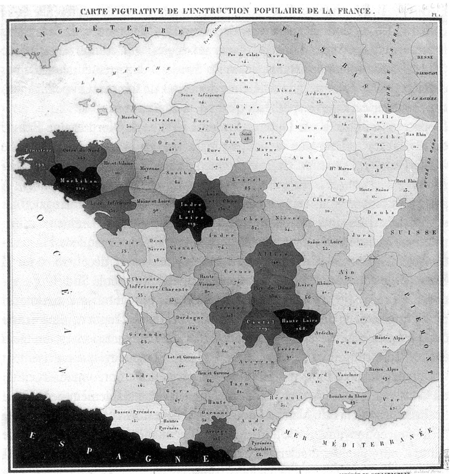
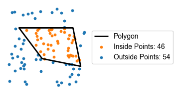

An overview of several geospatial techniques and thematic map styles in python.
Python
GIS
Author
Peter Amerkhanian
Published
July 20, 2025
Import Statements
import warningsimport pandas as pdimport numpy as np# Datavizimport matplotlib.pyplot as pltimport matplotlib as mplfrom matplotlib.ticker import FuncFormatterimport matplotlib.patches as mpatchesfrom matplotlib.colors import LinearSegmentedColormapfrom matplotlib.patches import Patchfrom adjustText import adjust_text# Geopatialimport geopandas as gpdfrom shapely.geometry import boximport contextily as cximport pygris.utilsimport pygrisimport osmnx as ox# IOimport requestsfrom concurrent.futures import ThreadPoolExecutor, as_completedfrom tqdm import tqdm
One of my favorite applications of Python is geospatial analysis. Python happens to have an amazing collection of GIS libraries that seem capable of doing almost any geospatial task I can imagine, from basic plots to spatial statistics to remote sensing and more. I’m writing this blog post to give myself a brief overview of how I currently use several of those libraries for “thematic mapping” – plotting distributions of data across space (Tennekes 2018). My main goal here is that I will have somewhere to go for boilerplate code/tutorials for myself, but hopefully an external reader gets some value out of it too.
I’ll cover the following:
Some examples of Spatial Data: GTFS transit data, U.S. Census shape files, and dealing with Coordinate Reference Systems across different datasets.
Thematic Maps: I’ll cover plotting distributions across administrative boundaries and raster grids.
Zooming in and otherwise refining plots in geopandas.
Question
I’ll base this post around a series of five exercises that get at the same basic question:
Motivating Question
How does the distribution of public transit stops in California vary by geography?
In the exercises, I’ll make maps that investigate the distribution at various geographic levels and in subregions within California.
Data
GTFS Data from Cal ITP
I will be using open data from CalTrans’ High Quality Transit Areas Analysis. While that analysis is focused on defining high quality transit areas, they make their intermediary transit-stop dataset and high quality transit-stop datasets available to the public. Thanks, CalTrans!
The data that CalTrans are using are derived from “General Transit Feed Specification,” or, GTFS data. GTFS is a standardized data format that public transit agencies use to describe fixed-route transit services. It was initially developed in 2005 to provide support for public transit route planning in Google Maps (Barbeau and Antrim 2015). The specific standards of GTFS are all documented at gtfs.org and its complete history and many use cases are given an excellent overview in the previously cited (Barbeau and Antrim 2015) paper.
I’ll retrieve the CalTrans transit-stop data via parallel API requests (see the folded code for the details). This code should theoretically work with any ArcGIS Rest API.
I noticed that a lot of geographic points that have a public transit stop are counted several times, perhaps to reflect different routes. I’m only interested in analyzing the distribution of unique physical transit stops without consideration of stop characteristics, so I drop duplicates based on geometry to get a unique geographic point for each transit stop.
I always like to do quick quality checks on geospatial data via calls to geopandas’s .explore() method, which produces interactive plots in one line of code. I’ll look at the stops at San Pablo Ave. and Dwight Way in Berkeley, CA just to make sure everything looks as expected.
gdf_all[gdf_all['stop_name'] =='San Pablo Av & Dwight Way'].explore( style_kwds=dict(fillOpacity=0.7, radius=12, color='red'), zoom_start=17 )
Make this Notebook Trusted to load map: File -> Trust Notebook
Looks about how I’d expect! Now, returning to the motivating question:
Motivating Question
How does the distribution of public transit stops in California vary by geography?
We now have public transit stop data, but to answer this question we also need to be able to place those stops within geographies, defined broadly. For that, I’ll go to the census’ shapefile database.
Census shapes with tigris/pygris
In my experience it’s rare that Census data are not essential to doing geospatial analysis within the U.S. I’m making plots of transit stops within California, so I will want the administrative boundaries of California and its counties to contextualize those stops. That means I need shapefiles for states and counties, which the Census maintains.
Census data and Kyle Walker
The universe of Census data – shapefiles and survey data – is large and confusing. Thankfully, a few extremely generous organizations and individuals have undertaken the herculean task of developing open source tools and documentation to make census data easy. I’ve blogged elsewhere about IPUMS and Geocorr, but here I’m going to highlight some of the work of Kyle Walker.
Whenever I need a reference on aggregate Census data or mapping, I turn to “Analyzing U.S. Census Data” by Kyle Walker, (Walker 2023). The book and accompanying geospatial libraries are written for R users, but almost all of the material applies directly in python, and the author has created python ports or else blog posts with python code that cover much of the material. In practice his libraries are so good that when there isn’t a direct python port for one of his R packages (e.g. tidycensus), I take the trouble of using R just for that package.
Census shapefiles are maintained in the Census’ TIGER/Line geodatabase, which contains the shapes of basically any administrative or political boundary you could think of within the U.S. One can download files via the census’ FTP archive (I’ve unfortunately written code to do this in the past), but it’s much easier to just use the excellent tigris/pygris package that Kyle Walker developed for simplifying access to TIGER/Line shapefiles (Walker 2025).
Using tigris/pygris is very simple – I just call the states() function1 for a given year, and it will return the outlines of every state in the U.S. as set in 2024 (note that the boundaries typically do not change for states, but they do change for some smaller geographies). More information about the use of tigris is available in (Walker 2023, chap. 5).
Geospatial datasets typically come with a set coordinate reference system (CRS), which defines how locations in the real world are represented as coordinates in the data. This may sound trivial, but given the imperfect spherical shape of the earth, defining a usable coordinate reference system is quite complex and systems aren’t one-size-fits-all. There are global CRS, CRS optimized for certain regions, and CRS optimized for distance calculations (Kennedy and Kopp 2000).
For reference, here are all of the CRS that I will use in this post:
The public transit stop data from the CalTrans come in a common and versatile CRS, World Geodetic System (WGS) 84, also known as EPSG:4326. Many global or multi-national datasets use WGS 84, including the Google Earth service. WGS84 is “geodetic,” meaning that distance is measured in longitudinal/latitudinal degrees. This is problematic for distance measurement and we’ll touch on that more in Exercise 4.
gdf_all.crs
<Geographic 2D CRS: EPSG:4326>
Name: WGS 84
Axis Info [ellipsoidal]:
- Lat[north]: Geodetic latitude (degree)
- Lon[east]: Geodetic longitude (degree)
Area of Use:
- name: World.
- bounds: (-180.0, -90.0, 180.0, 90.0)
Datum: World Geodetic System 1984 ensemble
- Ellipsoid: WGS 84
- Prime Meridian: Greenwich
U.S. Census TIGER/Line data typically use North American Datum (NAD) 83, EPSG code 4269. NAD83 is commonly used by U.S. Federal Agencies and, like WGS84, it is “geodetic” and measures distance in degrees. Unlike WGS84, NAD83 is optimized for geographic accuracy within the United States.
<Geographic 2D CRS: EPSG:4269>
Name: NAD83
Axis Info [ellipsoidal]:
- Lat[north]: Geodetic latitude (degree)
- Lon[east]: Geodetic longitude (degree)
Area of Use:
- name: North America - onshore and offshore: Canada - Alberta; British Columbia; Manitoba; New Brunswick; Newfoundland and Labrador; Northwest Territories; Nova Scotia; Nunavut; Ontario; Prince Edward Island; Quebec; Saskatchewan; Yukon. Puerto Rico. United States (USA) - Alabama; Alaska; Arizona; Arkansas; California; Colorado; Connecticut; Delaware; Florida; Georgia; Hawaii; Idaho; Illinois; Indiana; Iowa; Kansas; Kentucky; Louisiana; Maine; Maryland; Massachusetts; Michigan; Minnesota; Mississippi; Missouri; Montana; Nebraska; Nevada; New Hampshire; New Jersey; New Mexico; New York; North Carolina; North Dakota; Ohio; Oklahoma; Oregon; Pennsylvania; Rhode Island; South Carolina; South Dakota; Tennessee; Texas; Utah; Vermont; Virginia; Washington; West Virginia; Wisconsin; Wyoming. US Virgin Islands. British Virgin Islands.
- bounds: (167.65, 14.92, -40.73, 86.45)
Datum: North American Datum 1983
- Ellipsoid: GRS 1980
- Prime Meridian: Greenwich
When working with multiple datasets, it’s important to ensure that they share the same CRS. In GeoPandas, CRS alignment and conversion are straightforward. I’d like to work in the CRS provided by the U.S. Census – NAD83. I use simple variable assignment in python to bring the stops dataset (currently in WGS84) into NAD83.
Now that I have both the California shapefile and the public transit stops in the same CRS, I can start to use them together. First, I’ll do a spatial join – I’ll filter the public transit stops down to only those that are within the California shapefile.
With the preliminary data processing complete, I’ll now move into a series of five thematic mapping exercises to examine the distribution of public transit stops.
Exercise 1: Point Plot Pros and Cons
Sometimes, a simple point plot – where we simply lay out the raw data as points over a map – is the best thematic map for the job. Consider a canonical example
As a first exercise, I’ll make of the simplest thematic map – I’ll just plot all of the public transit stops as points over the California shapefile.
Looks good, but how does it do for answering our motivating question?
Motivating Question
How does the distribution of public transit stops in California vary by geography?
One can pick out the basic pattern that urban California has a lot of transit stops and rural California doesn’t, but point plots like this can be difficult to use when you have very dense clusters of points on top of or else very close to each other. The more fine grained distribution of the points is completely obscured.
We typically solve this issue by aggregating the data into larger units then visualizing the aggregates of points rather than individual points. This sounds abstract, so consider a concrete example – Jon Snow’s famous 1854 map of cholera cases in London.
Zooming in on a section of (John Snow 1854), we see the author used stacked rectangular bars to aggregate cholera cases to single addresses
I’d like to go deeper and explore how aggregating stops into larger geographies helps pick out different trends.
Exercise 2: County Choropleths
One very common geospatial data product is the choropleth map. Choropleth maps communicate how the density of some data or else another quantity that describes that data varies across administrative units, like countries, states, provinces, etc. The data are grouped into the administrative units, and the aggregate value for each unit is depicted in the map via color intensity/hue/saturation (Tennekes 2018).
Charles Dupin’s 1826 choropleth, (Charles Dupin 1826), depicting the availability of basic education in France is believed to be the earliest known choropleth map (Friendly 2000)

We are going to build a choropleth showing how many public transit stops there are in each county in California. In preparation, I’ll get some general plotting functions set up.
Some custom plotting code/functions: build_cmap, number_suffix_formatter
plt.rcParams["font.family"] ="Arial"def build_cmap( mpl_name: str="coolwarm", start: float=0.0, end: float=1.0, int_gran: int=1000,) -> LinearSegmentedColormap:""" Create a customized linear colormap by truncating an existing Matplotlib colormap. Parameters ---------- mpl_name : str, default="coolwarm" The name of a Matplotlib colormap. See the full list at: https://matplotlib.org/stable/gallery/color/colormap_reference.html start : float, default=0 The starting position in the original colormap's range [0, 1]. int_gran : int, default=1000 The number of discrete color samples to generate from the truncated colormap. Higher values yield smoother gradients. Returns ------- LinearSegmentedColormap A new colormap instance truncated from the original, beginning at `start`. Raises ------ AssertionError If `start` is not between 0 and 1 (inclusive). Examples -------- >>> cmap = build_cmap("viridis", start=0.2) >>> plt.imshow(data, cmap=cmap) """assert (start <=1) & (start >=0), "start must be real number in [0, 1]" cmap = mpl.colormaps.get_cmap(mpl_name) new_cmap = LinearSegmentedColormap.from_list("deep_reds", cmap(np.linspace(start, end, int_gran)) )return new_cmapdef number_suffix_formatter(x, pos=None):""" Formats numbers using k (thousand) and m (million) suffixes. Parameters: x (float or int): Number to format. pos: Ignored, included for compatibility with matplotlib's FuncFormatter. Returns: str: Formatted string. """ thresholds = [ (1e9, 'b'), (1e6, 'm'), (1e3, 'k'), ]for threshold, suffix in thresholds:if x >= threshold: value = x / thresholdreturnf"{value:.1f}{suffix}"if x % threshold elsef"{int(value)}{suffix}"returnstr(int(x))
The first step of making our choropleth is going to be aggregating the public transit stops (Point data) within counties (Polygon data). Here’s an abstract representation of the problem – we want to count the “Inside Points” for each county shape.
Points within a polygon (image by author)

Here’s a custom points_in_polygon() function that will count up the number of points from one gdf, point_gdf that are within the shape from another gdf, polygon_gdf. There’s an optional weight variable that I won’t be using.
def points_in_polygon( point_gdf: gpd.GeoDataFrame, polygon_gdf: gpd.GeoDataFrame, group_var: str, weight_var: str=None,) -> gpd.GeoDataFrame:assert point_gdf.crs == polygon_gdf.crs, f"{point_gdf.crs} != {polygon_gdf.crs}" joined = point_gdf.sjoin(polygon_gdf, how="inner", predicate="within")if weight_var: agg = joined.groupby(group_var)[weight_var].sum().to_frame(f"{weight_var}_sum") result = polygon_gdf.copy() result = result.merge(agg, left_on=group_var, right_index=True, how="left")else: counts = joined.groupby(group_var).size().to_frame("count") result = polygon_gdf.copy() result = result.merge(counts, left_on=group_var, right_index=True, how="left")return result
You can see that the logic is based on spatially merging the points with the polygons based on whether points fall “within” polygons, then I group by the polygon identifier and count up how many points there are within each. When we run that with the transit stops and counties, we get the following, where NaN represents a county having no public transit stops.
With that aggregated data, I can now make a choropleth of transit stops across counties. Before making the final plot, I’ll define various stylings for the map in the following folded code block. I often like to define parameters for geopandas plots in dictionaries so that I can reuse styles across different plots.
# Legendnew_cmap = build_cmap("YlOrRd", start=0, end=1)legend_cbar_kws = {"format": FuncFormatter(number_suffix_formatter),"shrink": 0.8,"label": "Number of Public Transit Stops","location": "top","pad": 0.01,}# General County Styleborders_kws = {"edgecolor": "grey", "linewidth": 0.3}data_fill_kws = {"alpha": 1, "cmap": new_cmap}# Missing County Stylemissing_fill_kws = {"hatch": "////", "facecolor": "none"}missing_patch = Patch(**borders_kws, **missing_fill_kws, label="County w/ no stops")
You can pass the style dictionaries directly into the plotting functions as keyword arguments, which you can see below with **missing_fill_kws, **borders_kws, and **data_fill_kws.
Looks like Los Angeles has a lot of public transit stops.
Exercise 3: A Region Choropleth
To provide additional perspective, we’re going to make another choropleth using a different geographic unit. I’d like to get a look at how stop availability differs across larger regions, such as the San Francisco Bay Area, Los Angeles, the Central Valley, etc. I don’t have a regions dataset, but I do have a counties dataset and regions are typically made up of counties, so this will be an opportunity to try combining smaller geographies into larger, custom geographies.
I want to combine the county shapes up into larger, parent region shapes. This spatial aggregation operation is called a dissolve() in geopandas. Here’s an abstract representation of what dissolve() does:
The effect of dissolve() (image by author)
Here we will create a new gdf, regions, with the results of dissolving the counties up into regions.
regions = county_shapes.dissolve(by="region")assert county_shapes.crs == regions.crs
Dissolving the Bay Area counties (image by author)
One benefit of moving up to a larger geographic unit is that there will be more space on the map for labels. Labeling all 58 counties in California is generally not feasible without using creative acronyms or else altering the county shapes, but regions lend themselves to labeling, albeit with a few tweaks to the labels.
Long strings are generally difficult to fit on maps, so as a first step I will add newlines to every region label at the midpoint of the text:
def split_name_middle(name: str) ->str: parts = name.replace("-", " ").split()iflen(parts) <=1:return name mid =len(parts) //2return" ".join(parts[:mid]) +"\n"+" ".join(parts[mid:])
print(split_name_middle('San Francisco Bay Area'))
San Francisco
Bay Area
Next, I’ll create a function to label each region polygon. The labels will be placed at the centroids of each region by default, but the function also allows for the user to pass a list of labels that need to be “adjusted” – moved away from their region for spacing purposes. I utilize the adjustText python library, a great tool for this purpose.
def label_polygon( gdf: gpd.GeoDataFrame, ax, column: str, adjust_list: list= [], adjust_kws={"avoid_self": True}, text_kws={},) ->None:ifnot adjust_kws.get('arrowprops'): adjust_kws['arrowprops'] = {"arrowstyle": "-","color": "black","lw": 1,"connectionstyle": "arc3,rad=0.1" } texts = []for _, row in gdf.iterrows():if row["geometry"].is_empty or row["geometry"].centroid.is_empty:continue point = row["geometry"].centroid x, y = point.x, point.yif row[column] in adjust_list: texts.append( ax.text(x, y, split_name_middle(row[column]), **text_kws))else: ax.text(x, y, split_name_middle(row[column]), **text_kws) adjust_text(texts, ax=ax, **adjust_kws)
Interesting perspective from this one, where the takeaway seems to be that the Los Angeles and San Francisco Bay Area regions have many more transit stops than the rest of the state. Like the previous county map, this shows that L.A. is far above the rest of the state in terms of raw count of stops within its borders.
Exercise 4: Heatmaps and Projected CRS
[…] heat maps may also visualize data over a geographic region. However, unlike choropleth maps, heat maps show the proportion of a variable over an arbitrary, but usually small grid size, independent of geographic boundaries.
We are going to explicitly define the size of these cells that break space up into a grid – e.g. square 20 kilometer cells. That means that we are going to be calculating distances across space, and that means a refresher on the appropriate use of Coordinate Reference Systems! Our stops dataset and the county/state shape data we are using are currently in NAD83, which is a geodetic CRS that uses latitude and longitude coordinates to locate positions (Kennedy and Kopp 2000).
We typically should not use those degrees for distance calculation because the distance that a degree measures is not constant. Per (Kennedy and Kopp 2000):
Since degrees of latitude and longitude don’t have a standard length, you can’t measure distances or areas accurately or display the data easily on a flat map or computer screen.
When we try any distance calculations on a gdf in a geodetic CRS, we get a warning in geopandas.
with warnings.catch_warnings(record=True) as w:# try calculating length california.length# clean up warning messageprint(str(w[0].message).replace(". ", ".\n"))
Geometry is in a geographic CRS.
Results from 'length' are likely incorrect.
Use 'GeoSeries.to_crs()' to re-project geometries to a projected CRS before this operation.
As the geopandas warning above suggests, we can address this warning by re-projecting the data into a projected CRS that explicitly measures location in meters.
Comparison of geographic versus projected coordinate systems (image by author).
The downside of this is that projections convert the 3D world to a 2D representation with reasonable accuracy. Consider the following example from (Kennedy and Kopp 2000):
A spheroid can’t be flattened to a plane any easier than a piece of orange peel can be flattened—it will rip. Representing the earth’s surface in two dimensions causes distortion in the shape, area, distance, or direction of the data.
Cartographers have developed a whole world of different 3D to 2D map projections designed with specific uses and geographies in mind to minimize distortion (Kennedy and Kopp 2000). Here we will use California Albers (also known as Teale Albers), a map projection optimal for distance calculations within California (Patterson 2022).
Now that we can measure distance accurately, lets make the heatmap. I have folded code below that I use to make my plots, but it has some complexities that are beyond the scope of the actual task so I’ll also walk through the basics of making a heatmap here.
I start with defining the corner coordinates of the point data that I want to make into a heatmap.
minx, miny, maxx, maxy = gdf_ca_proj.total_bounds
I use those coordinates to make a box that bounds the point data.
We’ll use the grid squares the same way that we used county and regional boundaries in the choropleth maps – we will aggregate the point data up into their parent polygons as show here (this only is a random sample of 500 stops):
Dividing space into a grid
Unlike with the choropleth maps, I’ll accomplish this aggregation task using a canned function, np.histogram2d, that aggregates point data into a grid. Here’s a simple plot of the results using plt.imshow().
Note by the units of this plot that we’ve lost the context of the coordinate reference system for this data. In my folded code below, I show how to maintain the CRS and the meter units, but it’s a little more involved and I divide it into two functions for re-usability:
Geospatial Histogram Functions: histogram_to_geodataframe and geospatial_histogram
def histogram_to_geodataframe(hist, x_edges, y_edges, crs=None) -> gpd.GeoDataFrame:""" Convert a 2D histogram and bin edges into a GeoDataFrame of grid cells with counts. Parameters: ---------- hist : 2D numpy array The histogram values (as returned by geospatial_histogram, already transposed). x_edges : 1D numpy array Bin edges along the x-axis. y_edges : 1D numpy array Bin edges along the y-axis. crs : any (optional) Coordinate reference system for the GeoDataFrame. Returns: ------- gdf : GeoDataFrame A GeoDataFrame with one polygon per grid cell, with a 'count' column. """ rows, cols = hist.shape polygons = [] counts = []for i inrange(rows):for j inrange(cols): count = hist[i, j]if count ==0:continue# Skip empty cells for efficiency x0 = x_edges[j] x1 = x_edges[j +1] y0 = y_edges[i] y1 = y_edges[i +1] polygons.append(box(x0, y0, x1, y1)) counts.append(count) gdf = gpd.GeoDataFrame({"count": counts, "geometry": polygons}, crs=crs)return gdfdef geospatial_histogram(gdf: gpd.GeoDataFrame, cell_size: float, bounds=None, weights=None) -> gpd.GeoDataFrame:""" Create a 2D geospatial histogram (raster grid of counts) from a GeoDataFrame of points. Parameters: ---------- gdf : GeoDataFrame Must contain Point geometries in a projected CRS (e.g. meters). cell_size : float Width and height of grid cells (in CRS units, e.g. meters). bounds : tuple or None Optional (minx, miny, maxx, maxy). If None, computed from gdf.bounds. Returns: ------- hist : 2D numpy array Histogram counts of points per grid cell. (Optional) x_edges, y_edges : 1D numpy arrays Bin edges in x and y directions. """assert gdf.crs.is_projected, "CRS must be projected first, e.g. `gdf.set_crs()`"if gdf.empty:raiseValueError("Input GeoDataFrame is empty.")ifnot gdf.geometry.geom_type.isin(["Point"]).all():raiseValueError("All geometries must be Points.") x = gdf.geometry.x.values y = gdf.geometry.y.valuesif weights isnotNone: weights = np.asarray(gdf[weights])iflen(weights) !=len(gdf):raiseValueError("Length of weights must match number of points in gdf.")if bounds isNone: minx, miny, maxx, maxy = gdf.total_boundselse: minx, miny, maxx, maxy = bounds# Define bin edges x_bins = np.arange(minx, maxx + cell_size, cell_size) y_bins = np.arange(miny, maxy + cell_size, cell_size)# Compute histogram hist, x_edges, y_edges = np.histogram2d( x, y, bins=[x_bins, y_bins], weights=weights )# histogram2d returns shape (len(x_bins)-1, len(y_bins)-1) with axes (x, y)# Transpose so that rows = y, columns = x (like image/raster orientation) hist = hist.Treturn histogram_to_geodataframe(hist, x_edges, y_edges, crs=gdf.crs)
With those two functions written, I’ll build my production heatmap. Here are the stylings:
Like the two choropleths above, this map highlights that there are a lot of public transit stops in Los Angeles. However, by using smaller geographic units that aren’t tied to administrative boundaries, we can also see other public transit hot spots. For example, we can see that the core Bay Area, around downtown San Francisco and downtown Oakland, is a transit hot spot that is distinct from another hotspot in Downtown San Jose to the South.
Exercise 5: Refining Land and Sea
Now we will try an exercise where we zoom from the state level into a specific region. Since we are operating at a more fine-grained geographical level, I’ll also switch to CalTrans’ “High Quality Transit Stops” dataset, slightly more sparse point data that only include stops with headways of 20 minutes or less.
Here’s a new, region specific question:
New Motivating Question
How does the distribution of high quality public transit stops in the San Francisco Bay Area vary by geography?
I’ll start with paginating the CalTrans’ API and retrieving the stop data.
With this dataset, I’ll need to make sure to filter out stops that are planned for the future. I also isolate the data down to unique, high quality, major stops.
I’ll proceed to set this point data’s CRS to match that of the regions data – the shapefile for California’s regions. This will facilitate doing a spatial merge where I isolate the high quality stops that are within the San Francisco Bay Area Region. I’ll do the same spatial merge to isolate the shapes of the Bay Area’s counties.
gdf_hq.crs = regions.crsassert gdf_hq.crs == regions.crsgdf_bay_hq = gdf_hq.copy()[gdf_hq.geometry.within(regions.loc["San Francisco Bay Area"].geometry)]sf_bay_county_shapes = county_shapes.copy()[county_shapes["region"] =="San Francisco Bay Area"]
Now lets try to make a plot looking at the distribution of high quality stops in the Bay Area, with the stops plotted over the Bay Area counties.
One immediate issue that arises when making a plot of the San Francisco Bay Area using county shapefiles is that the Farallon Islands are technically part of the administrative boundaries of San Francisco county. You can see the islands on the far left in the following plot of the Bay Area counties.
sf_bay_county_shapes.plot(facecolor="none");
Including the islands in an analysis focused on the human population of the Bay Area and the availability of public transit doesn’t seem appropriate, so we want to find a data-driven way to remove that land mass.
Here’s a picture of the Farallon Islands, (roletto_english_2005?) – I don’t see public transit stops.
The answer starts with an “explosion” – we can use the .explode() method from geopandas to break any multi-part geometries (in this case the multi-part polygon of San Francisco County with some pieces that are non-contiguous) into individual geometries.
We can see that, following the explosion, our dataframe has one new geometry – the Farallon Islands. Now we will bring back our points_in_polygon function so that we can count how many high quality public transit stops are in each of the geometries.
We can see that one of these doesn’t have any stops. It’s still called “San Francisco,” but this is the Farallon Islands geometry, which, since they are unpopulated islands, doesn’t contain any transit stops.
exploded_shapes[['NAME', 'count']].head(3)
NAME
count
0
San Francisco
2091.0
1
San Francisco
NaN
2
Marin
76.0
We’ll use that as a filtering condition to remove the islands from the dataset, and we arrive at a clean dataset of the populated geometries of the Bay Area counties.
Let’s continue refining this. The San Francisco Bay Area is known for being a bay, as in, there is a large body of water at the center of it. This map doesn’t reflect that yet and that’s problematic for plotting the distribution of transit stops in the area. We may see large swaths of map with no stops and assume that it’s a transit desert, when in fact it’s just a body of water.
This aerial photo of the Bay Area, (tobin_english_2018?), makes clear how much of the region is water
The bodies of water that make up the bay are all part of administrative boundaries of counties, so to include the bay, we will need to break out the geometries for water within each county. This sounds hard, and again, in the past I have written custom code to accomplish this, but it’s now incredibly easy using the tigris/pygris package and its useful erase_water() function.
HTTP download failed, trying FTP as fallback...
Downloading cb_2024_us_county_500k.zip from Census FTP...
After using the census’ 2024 water boundaries to remove water from the county shapes, we arrive at the following map.
bay_area_no_water.plot(facecolor="none");
Now that looks like the Bay Area!
With that base map, I’ll now layer over a heatmap showing the distribution of high quality public transit stops in the Bay Area.
Here I’ll handle the necessary CRS manipulation for working with distances (I again use California Albers), then I aggregate the stop data into 5 kilometer square cells to create the raster grid for the heatmap.
# Change all data to CA Albers CRSgdf_bay_proj = gdf_bay_hq.to_crs(CA_ALBERS_CRS)bay_area_no_water_proj = bay_area_no_water.to_crs(CA_ALBERS_CRS)sf_bay_county_shapes_proj = sf_bay_county_shapes.to_crs(CA_ALBERS_CRS)assert gdf_bay_proj.crs == bay_area_no_water_proj.crs# Create the raster gridcell_size =5_000bay_arrivals_hist = geospatial_histogram( gdf_bay_proj, weights=None, cell_size=cell_size)assert bay_arrivals_hist.crs == bay_area_no_water_proj.crs
Next I’ll get all of the styling for the plot defined in dictionaries.


{kind=link}
{kind=link}